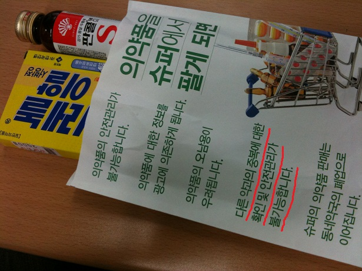

[요즘 약봉투, 중복 투약에 대한 확인 및 안전관리는 약국에서도 흔치 않다]코감기를 달래기 위해 약국에 갔다.
판콜S 2병을 사러 갔는데 들른김에 상비약으로 타이레놀ER을 추가구매했다.
그 결과로 받은 약봉투가 바로 위 사진이다.
'의약품을 슈퍼에서 팔게 되면' 이라는 제목으로 의약품 약국외 판매의 폐단을 열거하고 있다.
그 중에는 다음과 같은 항목도 있다.
'다른 약과의 중복에 대한 확인 및 안전관리가 불가능합니다.'
여기서 짚고 넘어갈 것이 있다.
판콜S의 포장에 적힌 첫번째 경고문구는 다음과 같다.
1) 진해거담약, 다른 감기약, 해열진통약, 항히스타민제, 진정제 등과 동시 복용하지 말 것.
즉, 타이레놀ER 과 같은 해열진통제와 동시 복용하지 말라는 것이다.
하지만 나는 판콜S 두 병과 타이레놀ER 을 구입하면서 두 약품의 병용에 관련해 아무런 복약지도를 받지 못했다.
(사실 '타이레놀은 4시간마다 먹는거 아시죠?'라는 잘못된 복약지도를 받긴했다. 타이레놀과 달리 타이레놀ER은 8시간마다 복용해야 한다.)
의약품 약국외 판매금지를 외치는 약사들의 주장이 힘을 얻기 위해서는 무엇보다도 철저한 복약지도가 필요하다.
야간 판매는 그 다음 문제.